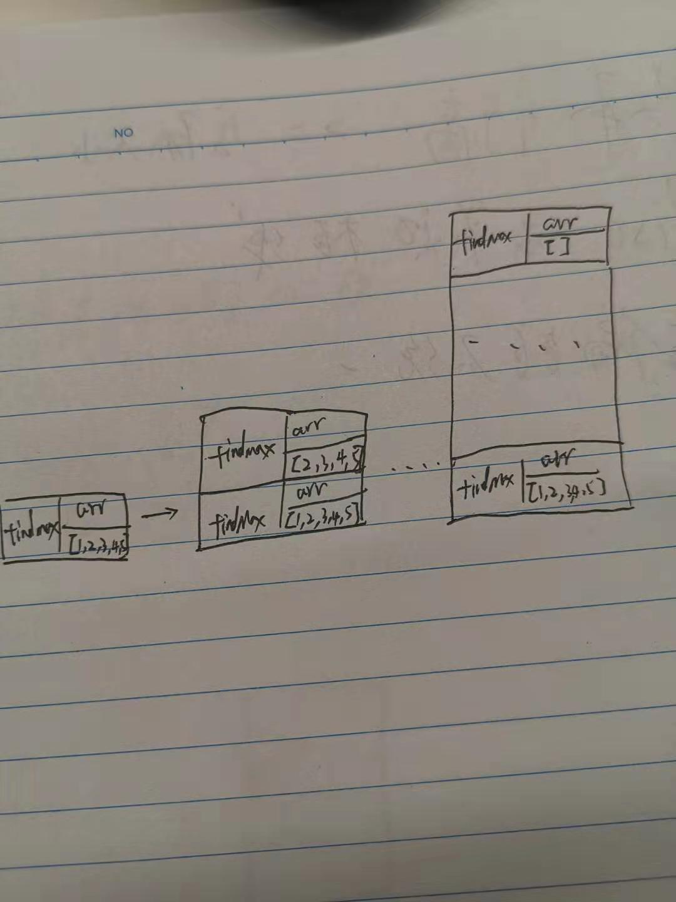

算法（1）简单算法
算法（1）简单算法
简单常见算法
二分查找法
针对有序的数据集，每次查找时都取中间值，逐步缩小查找范围，最后获取到目标值
复杂度：$O(log_n)$
选择排序
选择排序是针对数组的一种排序算法。
过程：遍历数组，计算出最值，新建一个数组，将最值放入新数组,
复杂度：$O(n^2)$
递归
递归指函数在内部调用本身，
使用递归注意两个条件：基线条件、递归条件。
基线条件：跳出递归的条件
递归条件：对递归元素逐步减少的条件，
要合理利用这两点，不然容易无限循环。
在数组中取最大值1
2
3
4
5
6
7
8
9
10
11
12
13function findMax(arr) {
let max = 0;
if(arr.length === 0) {
return max;
} else {
max = arr[0] > max ? arr[0] : max;
arr.splice(0, 1);
return findMax(arr);
}
}
var arr = [1, 2, 3, 4, 5];
findMax(arr);
递归算法与数据结构中的 栈 是及其相似的。
已上面的算法为例，
调用findMax([1,2,3,4,5])时，将findMax([1,2,3,4,5])压入栈顶，
而findMax会调用findMax([2,3,4,5]),然后将findMax([2,3,4,5])压入栈,
如下图所示：

然后从栈顶依次得出计算结果出栈。